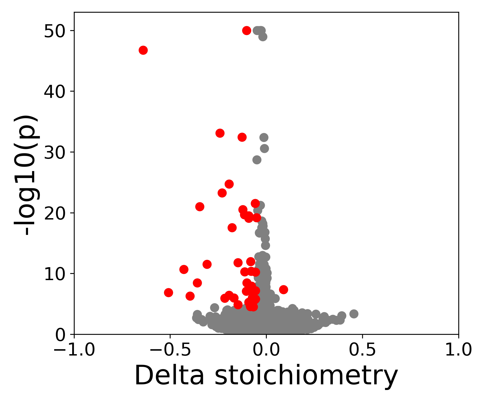

Differential modification analysis
Identify reference sites with a significant difference in modification stoichiometry between conditions.
Running diff test
Use SWARM_diff.py to run GLM test and identify reference coordinates where stoichiometry depends on the condition.
python3 SWARM_diff.py -i $INPUT -o $OUT -n 24
Required:
-i, --data_file Tab-separated file with columns: M2_file_path RepName Condition
-o, --output_file Output file path
Optional:
-p, --M2_threshold Only test sites where 1+ sample has site probability over p [0]
-s, --Stoich_threshold Only test sites where 1+ sample has stoichiometry over s [0]
-delta, --Delta_threshold BH adjust for sites over minimum delta stoichiometry [0]
-n, --ncpus Number of CPU threads [1]
-h, --help Show this help message and exit
Input format
Create an input file in tsv format, make sure to include header with 3 columns as seen below.
M2_file_path RepName Condition
/path/WT_rep1.m2.pred.tsv 1 WT
/path/WT_rep2.m2.pred.tsv 2 WT
/path/KO_rep1.m2.pred.tsv 1 KO
/path/KO_rep2.m2.pred.tsv 2 KO
- M2_file_path: path to the site-level prediction file (tsv)
- RepName: name of the rep, each sample of the same condition requires unique name
- Condition: reps will be grouped by condition, label the same condition consistently
Output format
Produces a tsv file with p-values and average and per-rep information for sites tested with enough coverage in at least one sample.
| contig | position | site | coverage_KD | coverage_WT | probability_KD | probability_WT | stoichiometry_KD | stoichiometry_WT | avg_stoichi_KD | avg_stoichi_WT | pval | adj_pval |
|---|---|---|---|---|---|---|---|---|---|---|---|---|
| 1 | 52978277 | GGACA | [ 0. 42.] | [ 0. 50.] | [nan, 0.047] | [nan, 0.04] | [0. 0.047] | [0. 0.04] | 0.048 | 0.040 | 0.859 | 1 |
| 1 | 52978282 | GGACT | [23. 58.] | [26. 75.] | [0.043, 0.034] | [0.0, 0.04] | [0.043 0.034] | [0. 0.04] | 0.037 | 0.030 | 0.801 | 1 |
| 1 | 52978287 | AGAAC | [20. 50.] | [22. 67.] | [0.1, 0.04] | [0.0, 0.074] | [0.1 0.04] | [0. 0.074] | 0.057 | 0.056 | 0.981 | 1 |
| 1 | 52978295 | CCAGA | [ 0. 52.] | [23. 68.] | [nan, 0.038] | [0.217, 0.132] | [0. 0.038] | [0.217 0.132] | 0.038 | 0.154 | 0.152 | 1 |
| 1 | 52978297 | TTATC | [21. 54.] | [25. 69.] | [0.142, 0.055] | [0.04, 0.028] | [0.142 0.055] | [0.04 0.0289] | 0.080 | 0.032 | 0.261 | 1 |
| 1 | 52978305 | CTAGC | [25. 57.] | [25. 77.] | [0.0, 0.052] | [0.0, 0.118] | [0. 0.052] | [0. 0.116] | 0.037 | 0.088 | 0.243 | 1 |
| 1 | 52978318 | GTACA | [24. 52.] | [21. 70.] | [0.083, 0.173] | [0.047, 0.171] | [0.083 0.1732] | [0.047 0.171] | 0.145 | 0.143 | 0.975 | 1 |
| 1 | 52978321 | TGAAC | [24. 54.] | [23. 63.] | [0.0, 0.037] | [0.043, 0.031] | [0. 0.037] | [0.043 0.031] | 0.026 | 0.035 | 0.753 | 1 |
| 1 | 52978328 | ATAGG | [22. 50.] | [25. 69.] | [0.045, 0.0] | [0.0, 0.043] | [0.045 0. ] | [0. 0.043] | 0.014 | 0.032 | 0.496 | 1 |
| 1 | 52978329 | GGAAC | [22. 49.] | [25. 70.] | [0.045, 0.02] | [0.0, 0.028] | [0.045 0.02] | [0. 0.028] | 0.028 | 0.021 | 0.788 | 1 |
Visualization
